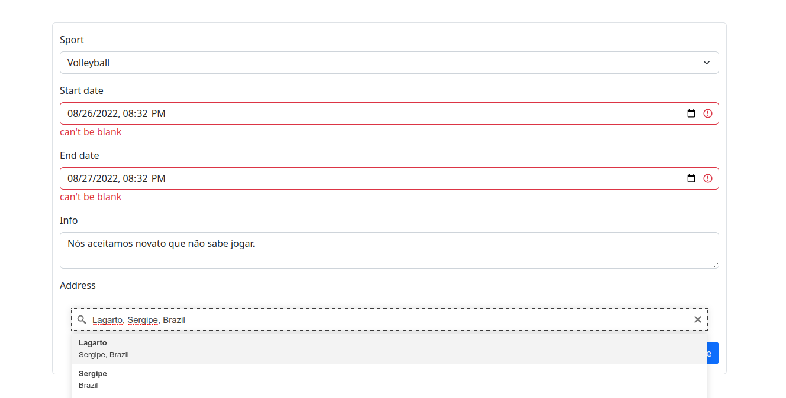
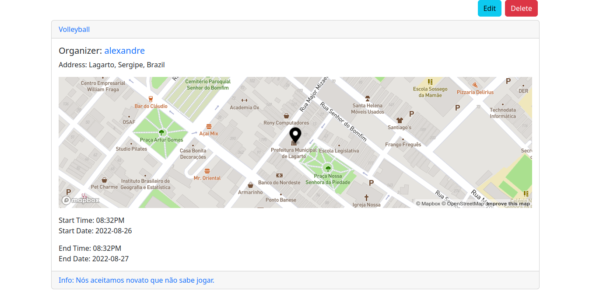
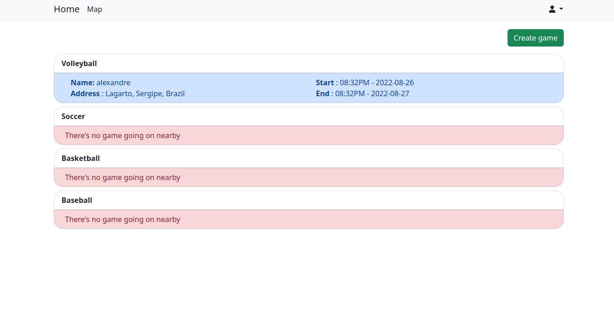
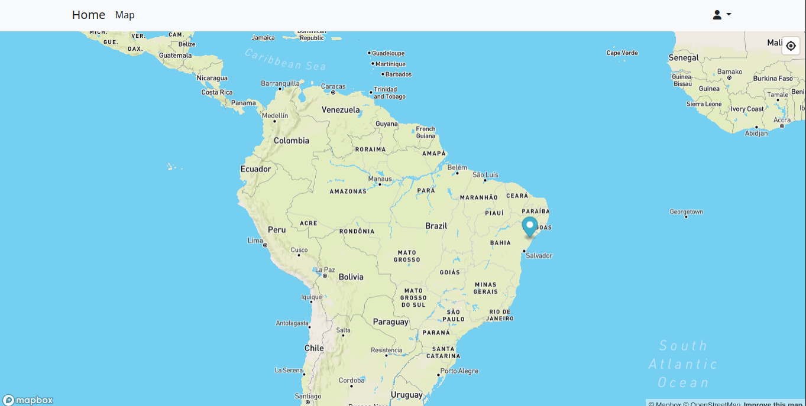
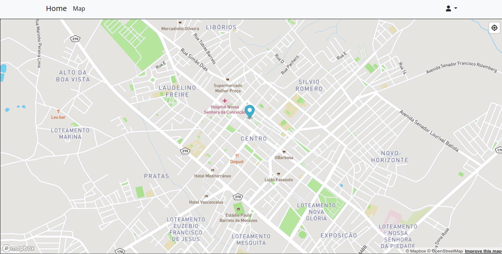
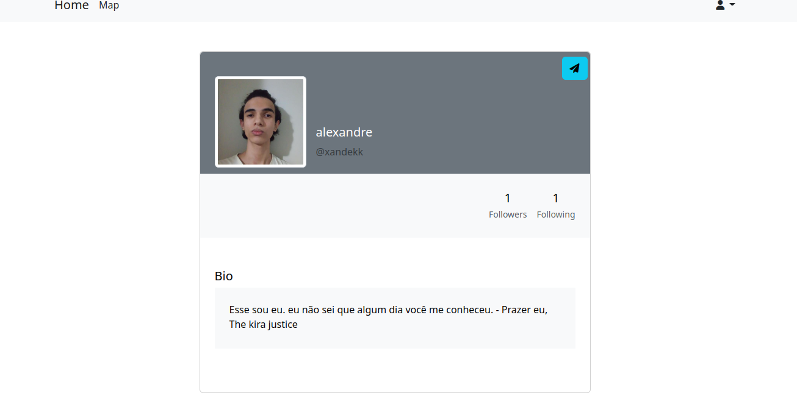

O repositório: EsporteX Eu vou dividir em categorias para explicar sobre o projeto, as categorias são: qual é o propósito, as dificuldades do projeto, o que mudaria hoje, o que foi usado e minha opinião sincera sobre o projeto.
O meu propósito foi querer encontrar pessoas que gostam e jogam o mesmo esporte que eu.
Bem, não tive muita dificuldade, na verdade, teve um, que era sabe a localização do usuário e procurar usuários que curtam e jogam os mesmos. Eu estava em dúvida que usava o GPS ou o próprio usuário indicava onde ele morava, no final, eu acabei usando para localizar o usuário usando GPS.
Eu estava falando sobre o uso de GPS, é aqui que eu mudaria, eu deixaria que pudesse ter as duas opções, como GPS e próprio usuário. E, além disso, eu mudaria o Bootstrap para Tailwind.
O framework web foi Ruby on Rails. O framework CSS foi Bootstrap. O banco de dados foi o PostgreSQL. Eu usei o PostGIS, que é uma extensão de PostgreSQL que permite o uso de objetos GIS.
Odiei o resultado.
Então é isso, obrigado por ler até aqui e tchau!
